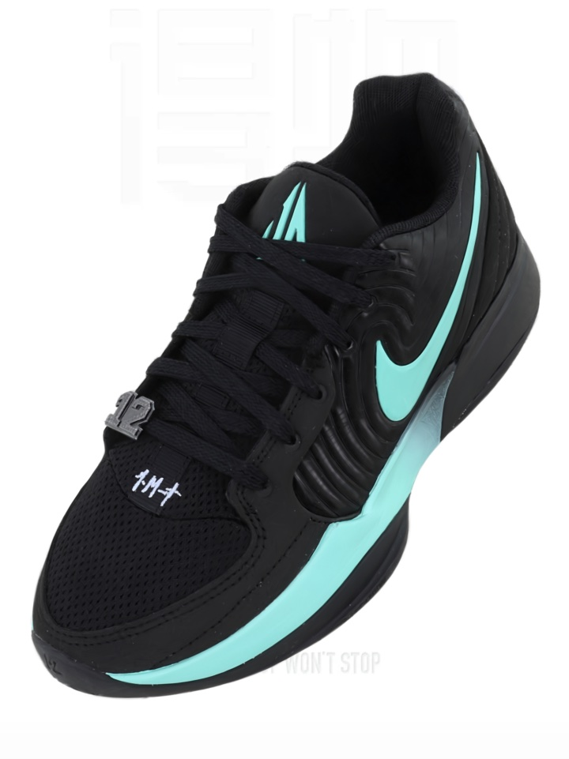
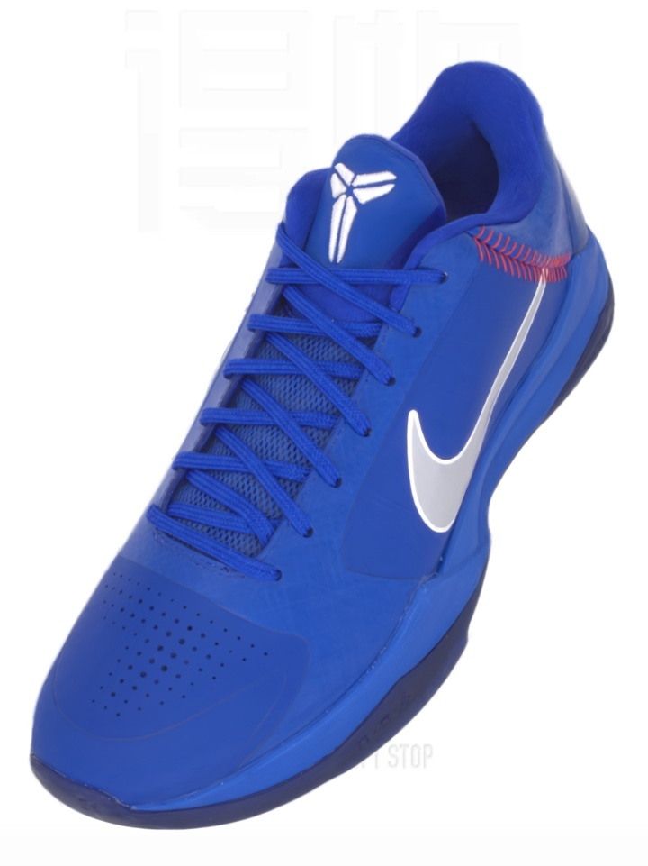

Shanghai, China/Senior Algorithm Engineer at Dewu
Yong-Qiang Tan
Computer vision, from research to production.
100K-parameter saliency models, road graphs traced point by point, and now 3D Gaussian Splatting at industrial scale.
01About
I am a senior algorithm engineer at Dewu in Shanghai, where I work on 3D Gaussian Splatting for footwear, LLM engineering, and visual content understanding.
Before Dewu I spent two years at Tencent YouTu Lab on content moderation and computer vision, and earned my M.S. at Nankai University with Ming-Ming Cheng, working on efficient saliency models and road graph extraction.
Focus
- 013D Gaussian SplattingReconstructing products as renderable 3D assets.
- 02LLM EngineeringPutting large models to work inside production systems.
- 03Visual Content UnderstandingContent moderation and product understanding at scale.
02Selected Work


3D Gaussian Splatting · DewuFootwear reconstructed as renderable 3D assets for the Dewu 3D Space.In the app · 得物 → 鞋 → 3D 空间
03Selected Publications
-
’20 296citations -
’20 CVPR 2020 First author VecRoad: Point-based Iterative Graph Exploration for Road Graphs Extraction PDF Code Video161citations -
’21 131citations
04Experience
-
2023 — Now
DewuSenior Algorithm Engineer · 3DGS, LLM Engineering, Computer VisionShanghai
-
2021 — 2023
Tencent YouTu LabAlgorithm Engineer · Content Moderation, Computer VisionShanghai
-
2019 — 2021
Nankai UniversityM.S. Computer Science · Advisor: Ming-Ming ChengTianjin
-
2014 — 2018
Xidian UniversityB.Eng. Software EngineeringXi’an
05Contact
Let’s talk computer vision, 3DGS, and LLMs.